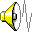

Unlawful access is a federal offense.
Mirroring 25 years of classified files to public net…
3,114 items · 11 dossiers · 6 video exhibits

911_CALLS_NIGHT_ONE.wavThe world called it the Huffle Happening. Overnight, millions appeared — driveways, subway tunnels, supermarket freezers. Nobody knew where from. Nobody knew how to make them stop.
A billion-dollar global nonprofit that started as a kids' neighborhood watch — and never lost the heart of one. They find Huffles in distress, calm them, rehome them, and help them belong.
Founder · Director
│
The ones who go in. High-risk extractions; talking ballooning Huffles down off the ledge. The public face of doing it the right way.
Builders of the Huffle Habitats: multi-biome biodomes where rescued Huffles decompress and learn to live among us.
The brains. Behavioral science, the Sanctuary AI, and the search for where Huffles actually come from.
HRUMF's elite field team — chosen personally by Cindy Sloane. Four operatives. Two cadets. Each one bonded for life to a Huffle partner.
Bold, charismatic, leads from the front. The face of the rescue — and the reason the public ever learned to trust a Huffle handler. First in, last out.
Big, bold, fearless. Pockets a "trophy" from every single mission. Climbs what shouldn't be climbable.
Monastery-raised. Telepathically linked to Luca since age eight. The quietest, deadliest de-escalator HRUMF has — talks a ballooning Huffle back down without saying a word.
Quiet. Bonded to Fai so completely they don't need to talk. Moves a room without lifting a finger.
Built the first Habitats — the multi-biome biodomes where rescued Huffles learn to live among us. Alan is the only Huffle on record who talks back, and Isaac wouldn't have it any other way.
Brilliant, deadpan. Rescued from a lab as one of the very first Huffles — and he has opinions about it.
Twenty-one. Wheelchair user. Built Sanctuary — the AI that runs every mission — and somehow also looks after three lab-coat Huffles who keep almost breaking it.
Eager, clumsy, chaotic lab assistants. They want to help so badly. It rarely goes to plan.
Two kids started the Huffle Helpers on the same street in Madeira. Cindy Sloane was one of them. Her best friend — maybe more — was a boy named Chris Tanti. They drew the Helpers' first logo together.
Then a Huffle took everything from him. A stowaway, terrified, hidden in the engine room of his parents' anniversary cruise. It ballooned. The ship went down. His mother and father went with it — killed by the gentlest creature on Earth, simply because it was scared.
Cindy said it was a tragedy. Chris said it was a verdict. They were eighteen. They never spoke again.
Fourteen years later, Cindy runs HRUMF. And Chris runs the thing trying to destroy it.
THE DOLOS INITIATIVE
"We rescue Huffles. We rehabilitate them. We keep humanity safe."
An international Huffle-welfare organization. Award-winning. Government-backed. Trusted on every continent.
It's a front. Behind it, DOLOS cages Huffles, experiments on them, and harvests what makes them impossible — their immortality, their immunity to pain, their refusal to age — and sells it to billionaires who'd like to live forever.
To keep the public from caring, DOLOS floods the world with fake news until people are too afraid of Huffles to ask what's happening to them. It works. The planet is split down the middle.
Biological yield deemed of strategic interest . Oversight suspended pending continued cooperation . Subject org to remain operational .
They've already done the impossible — conditioned a Huffle to forget how to care. They call it SLASH. The cuteness is still there. The eyes are empty. Living proof the wrong hands can change what a Huffle is.
This isn't a show with a marketing plan. It's a universe already making content about itself.
The Huffles don't get broadcast to kids — they get discovered, in the exact places kids already live online. This cache you're reading? It's the proof of concept. Every file points to the next. Every channel sells the same world.
And it all has a home — a persistent virtual world where kids enroll as cadets and the universe lives full-time.
The universe keeps revealing itself — because there's always more of it.
What's launching now is the first chapter, not the whole book. These folders are already filling up.
The All Stars in the field, ongoing.
Cadet missions, Habitat-building, rescue sims.
The Cincinnati Papers. Alan's memoirs, if he agrees.
Real-world cadet experiences, live events.
A participation engine for a community of millions.
The accessories the Huffles wear, the gear the team carries.
Whatever form it takes next, the audience is already living here.